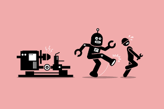

Labour Exploitation
AI's Autonomy
Artificial intelligence is no doubt here to stay. It already has a place in people’s daily lives often taking the place of search engines like Google and Bing. However, AI is often wrongly represented as a fully autonomous system as it is heavily dependent on human labour
Virtual assistants such as those used on online shopping websites widely marketed as autonomous tools, often rely on invisible workers who may be transcribing audio, verifying the virtual assistant's understanding, or even performing tasks like scheduling meetings that AI may struggle with. Even large sophisticated Large Language Models (LLMs) rely on human trainers to fine-tune their responses and mitigate biases, toxicity, and disturbing content.
Alongside this a study conducted by the International Labour Organization (ILO) discovered that "among crowd workers many holding bachelor's and postgraduate degrees in the STEM field are primarily employed in routine and repetitive data work, which often require minimal specialized knowledge." This leads to a significant mismatch between educational attainment and opportunity
The ILO further stresses that “it is crucial to address the ethical and social implications that arise from it, including the need to protect workers and promote greater transparency and accountability in AI systems.”
AI and Unemployment
At the same time, companies are increasingly using AI-driven productivity gains to justify workforce reductions.
In January 2026 alone:
Amazon has laid of 10% of its corporate workforce amounting to 16,000 jobs.
UPS says it will cut up to 30,000 jobs this year to reduce dependence on Amazon.
Meta Platforms has laid of roughly 10% of staff, about 1,500 people from its Reality Labs Division.
Pinterest said Tuesday (Jan 27th) it plans to lay off less than 15% of its workforce and cut back on office space as the company embraces artificial intelligence.
Citigroup is expected to lay off more employees in March following a round of about 1,000 job cuts this month.
In each of these instances higher ups and CEO’s have stated the necessity for these cuts using rhetoric such as “fixing regulatory problems”; “cutting costs”; “reallocating resources” and “promoting AI-focused production”
The question must be asked with roughly 49,000 people being or planned to be made unemployed in 2026 alone, and approximately 55,000 people being made redundant in 2025, amounting to just over 100,000 in the past 2 years. The speed and scale of AI-driven displacement raises the question how can societies ensure the benefits of AI are broadly enjoyed and not detrimental to average workers?